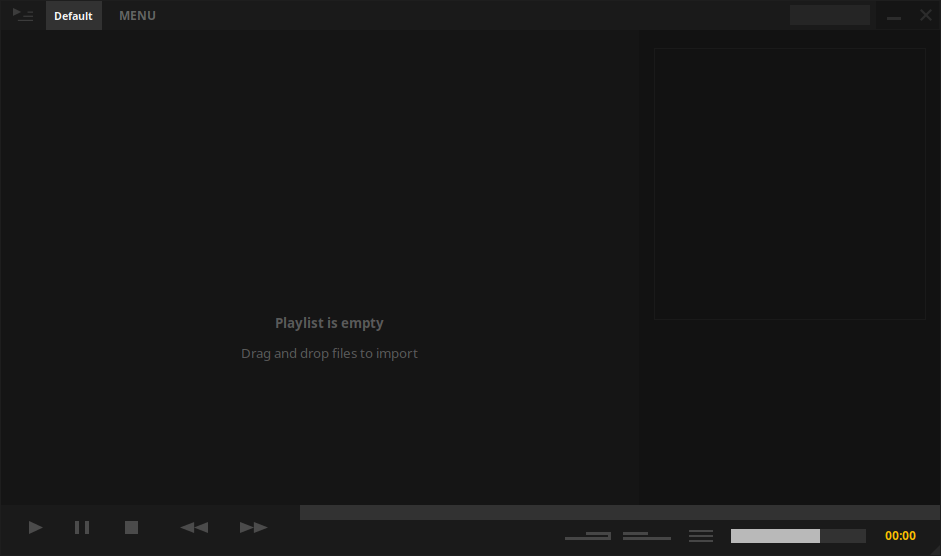
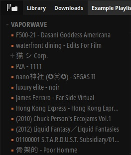
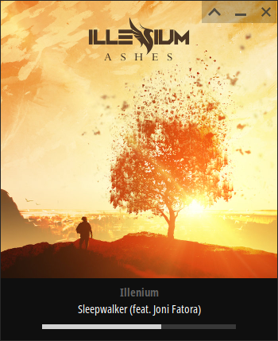
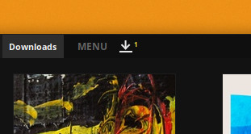
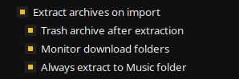
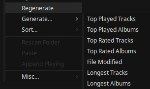

Manual
Welcome to Tauon Music Box!
Tauon is a playlist oriented music player that makes that assumption that folders are albums.
(You may find the words "album" and "folder" used interchangeably within the interface and documentation)
While some features and interface elements may not be immediately intuitive, I hope
that once you are a familiar, you will find that Tauon is pleasant, fun and fast to use!
When you launch Tauon for the first time, you should be greeted with the main window that looks something like
this:

Click a region in the screenshot above to go to that section of the manual
Importing tracks
To import tracks, simply drag and drop files or folders from your file manager into the main
tracklist area.
Tip: To get started, try import all your music into the single playlist.
Once you have tracks imported, just double click them to play.
Updating
Tauon has no background file monitoring. To update, simply clear the playlist and re-import.
Alternatively, you can trigger a rescan of all top level folders you've previously added by selecting "Rescan Folders"
from the playlist tab context menu.
The top panel + playlist navigation

The top panel contains the playlist tabs. Click a playlist tab to switch the tracklist view to that playlist. You
can also mouse wheel scroll to cycle through them.
Hint: Playback from any originally started playlist will still continue from that playlist.
You can create a new empty playlist by clicking MENU, then clicking "New Playlist".
You can delete a playlist by middle mouse clicking on the tab of the playlist.
You can drag tracks from the main tracklist and drop them onto a playlist tab to add them to the
end of that playlist.
If you drag and drop tracks to the right of all the playlist tabs,
this will create a new playlist of those tracks.
You can drag tabs to re-arrange them. Hold Shift to merge one playlist onto
the end of another.
Hold Ctrl while dragging to the right of all the tabs to create a duplicate of that playlist.
The bottom panel

Starting from the left:
- Play button.
Feature: Right click the play button to go to playing.
This will locate the currently playing track in the tracklist.
The playlist will be switched if necessary, however if there is another matching
track in the currently viewed playlist, it will be located and set to be the playing track instead.
(This is useful for example, if you were playing a single track from a shuffled playlist, and you
then wanted to continue playback from the full album that resides in another playlist.)
- Pause button.
- Stop button. Right click to activate auto-stop, which will stop
playback when the end of the current track is reached.
- Previous button. Right click toggles repeat.
- Next button. Right click toggles shuffle.
Feature: Next and Previous normally play songs in the order they appear in the playlist.
However with shuffle mode on, Previous plays tracks from playback history.
Staring from the bottom right:
- Playback time indicator. You can click this to cycle available display modes: Time elapsed,
Time remaining, Elapsed + track length and Album elapsed + album length.
- Volume bar.
- Playback menu.
- Shuffle toggle. You can right click to access the shuffle menu.
- Repeat toggle. You can right click to access the repeat menu.
Tip: If you want to shuffle tracks within a single album, activate both Repeat
Album and standard shuffle.
(Maybe you're playing this album.)
Or you could always just drag and drop tracks to a new playlist and then enable shuffle.
Along the top is the seek bar. You can middle mouse click this to bring up a time
cursor.
The right side panel
On the top half of the side panel is the album art display.
Click the album art to cycle through any available images.
Tip: Holding Shift while placing the mouse cursor over the album art will tell
you the image resolution.
On the bottom half is track metadata. If you right click here, this will bring up the lyrics
menu. If the "Show lyrics" entry in the menu is enabled, the right side panel will
automatically switch to lyrics layout when lyrics are available.
You can resize the panel by dragging the left edge.
You can also toggle between an alternate centered style layout by middle mouse clicking
in the side panel.
Keyboard Shortcuts
Here's some of the important shortcuts and their defaults:
| Space |
Play/pause |
| - / + |
Seek |
| Left / Right |
Cycle playlists |
| Shift + Left / Right |
Previous/Next |
| " |
Show playing |
| , / . |
Toggle repeat / shuffle |
| Ctrl + F |
Find in playlist |
| Begin typing |
Global search |
For a more complete list, see here.
You can edit key-binds in the input.txt file in the user data folder. You can find this folder by going to MENU > "Settings..." then pressing "Open data folder".
Gallery view

You can enter the gallery either by clicking MENU, then clicking the gallery layout icon (2nd from the top)
or by pressing mouse button 4 (the one closer to you) on a 5 button mouse.
You can also enter the gallery in a "keyboard control mode" by pressing Tab
To play an album, just click it. This is a single click by default but you can change it to a double-click in
settings if you prefer by going MENU > Settings... > View and un-checking "Single click to play".
The tracklist
Selecting and re-arranging tracks
You can select a single track by clicking on it or you can select an album block by clicking its
title in the tracklist.
You can also select a range by clicking the first track then holding Shift and clicking the last
track.
You can move/add tracks in a playlist by drag and drop or copy and paste.
Note: Using paste from the context menu will add tracks at the end of the album
block of the selected track.
Using the Ctrl + v shortcut will add them to the end of the viewed playlist.
Note: Moving a single track requires holding Shift when dragging.
Scrolling
You can scroll using the mouse wheel.
There is also a scroll-bar hidden to the left of the tracklist until you mouse over.
In the scroll bar you can hold down the mouse button above or below the grip to scroll quickly in that
direction.
You can also right click to jump to an absolute position within the scroll field.
The left side panel
To toggle the left side panel, click the far top-left corner button.
The left side panel has multiple available views. To switch between them, right click the toggle button to bring
up a menu that lists the other views.
Playlists + Queue (Left side panel)

This "Playlists + Queue" view lists all of your playlists. These tabs behave similar to the top panel tabs. You
can choose to unpin a tab from the top panel from
the tab right click context menu.
Tip: Just keep tabs Pined when you want quick access to them.
Artist List (Left side panel)
This layout lists artists from the current playlist. See here for details.
Folder Navigator (Left side panel)
This view lists folders in the current playlist.

Double click a folder to play. Single click to simply locate that folder in the
playlist.
If there are sub-folders in your collection, this will be presented in a tree style layout.
Note that this doesn't directly represent folders on your filesystem, but rather tries to intelligently list
only relevant nodes of the folder structure of tracks you already imported.
Tip: If you have a large music collection, you could consider keeping your
collection divided in separate sub-folders based on, for example, different genres. This will allow you to
navigate your
music collection more easily using the folder navigator.
Warning: In the right click context menu of a node level folder, there's an option
named "Move playing folder here". Note that this is a physical move of
the folder of the playing track to the selected folder on disk. The folder will be placed in an additional
sub-folder that has the name of the artist of the album. (Folder will be created if it does
not exist.)
This feature is useful if you have multiple library locations you want to transfer albums between, or between
different sub folders such as suggested in the above tip.
Global search
The global search complies different types of results from all playlists. It will automatically activate when you start
typing.
Clicking an Artist, Genre or Folder result will create a new playlist of that result. Clicking a Track or Album
result will play it.
Right clicking any result will simply locate the result instead of
playing or creating a new playlist.
Ctrl + clicking will add the result to the current playlist without closing the search.
Quick find
The find box locates tracks within the currently viewed playlist only.
To use the find box, press Ctrl + F and type search terms, then use UP or DOWN arrow keys
to jump
to the next or previous matching results in the playlist.
Tip: You can press Shift + Enter to create a new playlist of all
matching results.
This can be useful for example, finding artists in features or filenames that may not be picked up by the
global search.
Since this also searches the filename, you can use this to create a playlist of tracks of a single file
type, for example searching .ogg
Mini Mode
Album on show here is https://illeniumashes.bandcamp.com/album/ashes

To enter Mini-mode, double click in the area under the seek bar of the main window.
You can switch to different styles by right clicking in the same area under the seek bar and selecting an option
from the menu.
While in mini mode, you can pause by right clicking.
One-click download importing

This feature monitors your downloads folder.
When a new music archive or folder is detected, you can press the button shown above to immediately import that item.
To enable this feature; in the "Functions" tab of settings, enable both "Monitor download
folders" and "Extract archives on import".
You may also wish to enable "Trash archive after extraction" and "Always extract to music folder".

Note: This feature works with folders and zip archives. Items older than one hour are ignored.
Feature: Items will be imported to the playlist you have flagged as the downloads playlist. You can do this
by right clicking a playlist tab and selecting "Misc..." > "Set as Downloads Playlist". Otherwise items will be imported to the currently viewed playlist.
Warning: Password protected archives are not supported.
Tip: 7z and RAR archives are also supported, but you may need to install some optional packages:
- AUR: Install optional packages
unrar and/or p7zip.
- Flatpak: Install host packages
unrar and/or p7zip (p7zip-full on Ubuntu). Grant permission to run
commands in host environment: $ sudo flatpak override com.github.taiko2k.tauonmb --talk-name=org.freedesktop.Flatpak
- Snap: Included by default.
Generator playlists (Smart / filter playlists)
Generator playlists allow you to create derivative playlists based on the content of another playlist. This is the
main way of creating a filtered view of a playlist.
You can quickly create a generated playlist from an existing playlist using the presets found under "Generate..." >
from the playlist tab context menu.

Once a generated playlist has been created, you can reload it by pressing "Regenerate" from its tab context menu.
Whenever you create a new playlist using the global search or quick find, these
will also be generator playlists that can be reloaded using the "Regenerate" function.
You can manually create and edit generator playlists by selecting "Misc..." > "Edit generator..." from the playlist tab context menu.
Generated playlists are made up of codes that you can use to create your own custom combination of searches, filters and sorters.
See here for more details.
Tip: By default, you need to press "Regenerate" in order to reload these playlists, but its possible to have this done automatically, either
globally by enabling the setting "Auto regenerate playlists", or for individual playlists by adding the generator code "auto".
Tip: The general idea is that you import your music library to a single playlist that will be used as a source playlist,
then you can create and remove generated playlists to create filtered/sorted views of your music.
Themes
You can cycle through the available themes by pressing F2. You can also toggle "Auto Theme" mode by pressing F3.
To install a custom theme (.ttheme file), place it in the theme folder inside Tauon's user data folder. For more details on creating a theme, see here.
Tip: You can find the user data folder by going MENU > Settings... > Functions > Open data folder.
Known community made themes